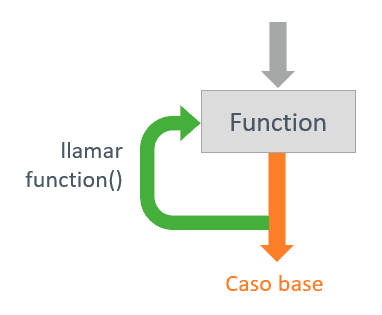
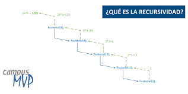
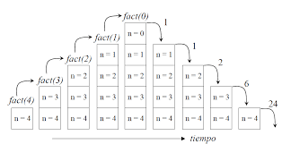
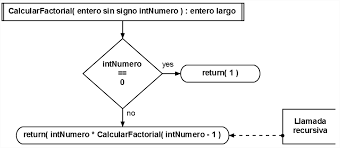
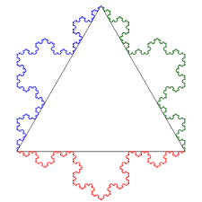
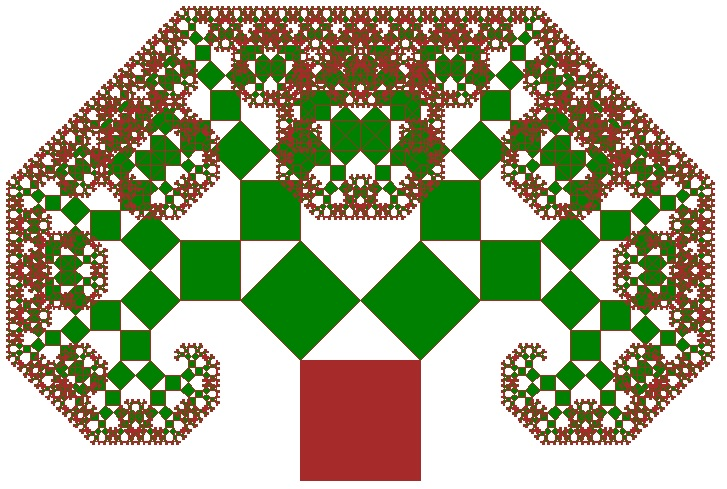

La recursividad es una técnica fundamental en las ciencias computacionales que consiste en resolver un problema dividiéndolo en subproblemas más pequeños de la misma naturaleza. Un algoritmo recursivo se caracteriza porque una función o procedimiento se llama a sí mismo durante su ejecución, hasta alcanzar un caso base que detiene la repetición.
Su importancia radica en que permite construir soluciones elegantes y compactas para problemas que, de manera iterativa, podrían resultar más complejos. La recursividad se aplica en áreas como el cálculo matemático, la resolución de acertijos, la programación de estructuras de datosárboles, grafos y listas enlazadas el diseño de algoritmos de búsqueda y ordenamiento, y la generación de gráficos computacionales como fractales.
En esta página se presenta una investigación sobre la recursividad y sus características principales. Se explican los procedimientos recursivos, sus aplicaciones y la complejidad computacional asociada. Además, se incluyen ejemplos prácticos de algoritmos clásicos como el factorial, la sucesión de Fibonacci, las Torres de Hanói y los fractales, acompañados de representaciones visuales que ayudan a comprender mejor su funcionamiento. Finalmente, se ofrece una conclusión acerca de la relevancia de la recursividad en el ámbito de la informática y la programación.

Definición de Recursividad
La recursividad es un método de programación y resolución de problemas en el cual una función, procedimiento o algoritmo se llama a sí mismo de manera directa o indirecta para resolver una tarea. Este enfoque permite descomponer un problema complejo en subproblemas más pequeños y manejables que siguen la misma estructura que el problema original.

Procedimientos Recursivos y Aplicaciones
Un procedimiento recursivo es aquel en el que una función o algoritmo realiza una llamada a sí mismo con el propósito de resolver una parte del problema original. Cada vez que la función se invoca, el problema se reduce a una versión más simple, y este proceso continúa hasta llegar al caso base, que actúa como condición de parada y evita que el ciclo se repita indefinidamente. De esta manera, la recursividad permite dividir un problema complejo en varios subproblemas de menor tamaño y con la misma estructura, logrando una solución final al combinar los resultados de todas las llamadas previas.
La recursividad se aplica en múltiples áreas de las ciencias computacionales y la matemática. En el ámbito del cálculo matemático, es útil para resolver operaciones como factoriales, potencias y series numéricas, incluyendo la famosa sucesión de Fibonacci. En estructuras de datos, resulta fundamental para recorrer árboles binarios, grafos y listas enlazadas, ya que estas estructuras tienen una naturaleza jerárquica que se adapta perfectamente al enfoque recursivo. También desempeña un papel central en algoritmos de ordenamiento y búsqueda, como QuickSort, MergeSort o Binary Search, los cuales aprovechan la división de los problemas en subconjuntos más pequeños.
Por otro lado, la recursividad se emplea en la resolución de problemas lógicos y puzzles, como las Torres de Hanói o el diseño de algoritmos para explorar laberintos, donde el mismo procedimiento puede repetirse en cada paso hasta encontrar una solución. Asimismo, en el campo de la computación gráfica y la geometría, se utiliza para generar fractales y modelar estructuras naturales como árboles, montañas o patrones repetitivos que, debido a su carácter autosimilar, se describen de manera eficiente mediante funciones recursivas.

Características de la Recursividad
Autollamado de funciones: una función se llama a sí misma para resolver subproblemas más pequeños del mismo problema.
Caso base: existe una condición de parada que detiene la recursión y evita ciclos infinitos.
División de problemas: descompone un problema complejo en subproblemas más simples y de igual estructura.
Uso de la pila de llamadas: cada invocación se almacena en la pila del sistema, lo que permite retomar la ejecución al resolverse los niveles más profundos.
Claridad y elegancia: los algoritmos recursivos suelen ser más fáciles de leer y expresar que sus equivalentes iterativos.
Costo computacional: pueden consumir más memoria y tiempo que los algoritmos iterativos, debido a la creación de múltiples llamadas.
Optimización posible: técnicas como la recursividad de cola y la memoización permiten mejorar el rendimiento y reducir cálculos repetitivos.
Autosimilitud: los pasos del procedimiento recursivo mantienen la misma estructura que el problema original.

Complejidad Computacional
La complejidad computacional de un algoritmo recursivo se mide analizando el número de operaciones que realiza en función del tamaño de la entrada. Para lograrlo, se utiliza principalmente la técnica de ecuaciones de recurrencia, que describe cómo el problema original se divide en subproblemas más pequeños y cuánto trabajo adicional se realiza en cada paso. Una ecuación de recurrencia expresa el tiempo de ejecución como una relación que depende del tamaño de la entrada y de las llamadas recursivas.
Por ejemplo, en un algoritmo como el factorial, donde la función se llama una sola vez en cada paso hasta llegar al caso base, la recurrencia es T(n) = T(n-1) + O(1), lo que se traduce en una complejidad de O(n). En cambio, en la sucesión de Fibonacci, cada llamada genera dos nuevas llamadas, lo que da lugar a la recurrencia T(n) = T(n-1) + T(n-2) + O(1), con una complejidad exponencial de O(2^n) si no se optimiza.
Para algoritmos más avanzados, como MergeSort, la recurrencia se expresa como T(n) = 2T(n/2) + O(n), ya que el problema se divide en dos mitades y, además, se realiza un trabajo lineal al combinar los resultados. Resolviendo esta recurrencia con el método maestro se obtiene que la complejidad es O(n log n).
En conclusión, medir la complejidad de un algoritmo recursivo implica identificar su caso base, determinar cómo se divide el problema en cada paso y analizar el costo adicional de las operaciones externas a las llamadas recursivas. Con estas herramientas, es posible predecir si un algoritmo será eficiente o si requerirá optimización.
Ejemplos de Algoritmos Recursivos
Factorial
Explicación del factorial y su algoritmo recursivo:
function factorial(n) {
if (n == 0) return 1;
return n * factorial(n-1);
}
function hanoi(n, from, to, aux){
if(n==1){
console.log("Mover disco 1 de " + from + " a " + to);
return;
}
hanoi(n-1, from, aux, to);
console.log("Mover disco " + n + " de " + from + " a " + to);
hanoi(n-1, aux, to, from);
}
Fractales
Curva de Kotch:

Conclusión
La recursividad es una herramienta fundamental en ciencias computacionales, ya que permite resolver problemas complejos de manera clara y estructurada mediante la descomposición de una tarea en subproblemas más pequeños y manejables. Su importancia radica en que simplifica la programación de algoritmos que, de otro modo, serían difíciles de implementar de forma iterativa, como estructuras de datos jerárquicas (árboles, grafos) o problemas matemáticos clásicos (factoriales, sucesión de Fibonacci, fractales). Además, la recursividad fomenta un pensamiento lógico y analítico en los programadores, promoviendo soluciones elegantes y eficientes cuando se utiliza correctamente. Sin embargo, también requiere cuidado en la gestión de recursos y la prevención de llamadas infinitas, ya que un mal uso puede afectar el rendimiento del sistema. En conclusión, la recursividad no solo es un recurso técnico valioso, sino también un pilar conceptual en el desarrollo de algoritmos y en la comprensión profunda de la resolución de problemas en ciencias de la computación.

Referencias IEEE
. H. Cormen, C. E. Leiserson, R. L. Rivest y C. Stein, Introduction to Algorithms, 3ra ed., MIT Press, 2009. Disponible en: https://www.cs.mcgill.ca/~akroit/math/compsci/Cormen%20Introduction%20to%20Algorithms.pdf
J. McCarthy, “Recursive Functions of Symbolic Expressions and Their Computation by Machine,” Commun. ACM, vol. 3, no. 4, pp. 184–195, 1960. Disponible en: https://www-formal.stanford.edu/jmc/recursive.pdf
D. E. Knuth, The Art of Computer Programming, Volume 1: Fundamental Algorithms, 3ra ed., Addison-Wesley, 1997. Disponible en: https://f.javier.io/rep/books/Donald-Knuth---The-Art-of-Computer-Programming-Vol-1-Fundamental-Algorithms.pdf
M. Gardner, “Mathematical Games: The Fantastic Combinations of John Conway’s New Solitaire Game ‘Life’,” Scientific American, vol. 223, no. 4, pp. 120–123, 1970. Disponible en: https://www.dbs.ifi.lmu.de/Lehre/Programmierpraktikum/WS0708/material/MathematicalGames.pdf
H. Sagan, Space-Filling Curves, Springer-Verlag, 1994. Disponible en: https://dokumen.pub/space-filling-curves-universitext-9780387942650-9781461208716-0387942653.html
R. Sedgewick y K. Wayne, Algorithms, 4ta ed., Addison-Wesley, 2011. Disponible en: https://algs4.cs.princeton.edu/